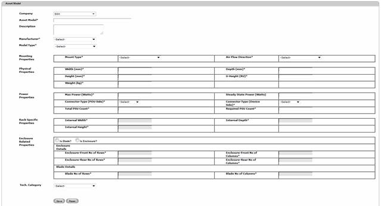
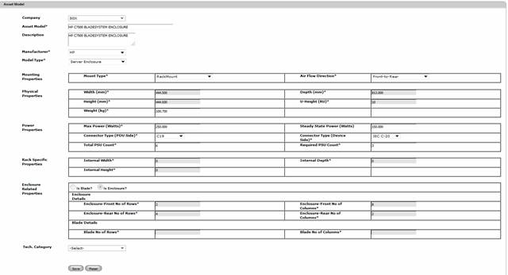

To create an Asset Model,
7. Navigate Masters>>Asset Model on the DCTrackMobileWeb menu bar.
You will see the Asset Model screen.

Figure 48: Asset Model Screen
8. Enter information on the required fields.
9. Select Mount Type as
a. Rack Mount or Stack in Rack: If asset is placed in a rack. If asset is 19-inch-wide than specify as rack mount else specify as stack in rack
b. Vertical mount: If asset is a rack PDU which is placed on the sides of the rack.
c. Floor Standalone: If asset is a floor mounted asset and can’t be placed inside a rack.
d. Enclosure Mount: If asset is blade/ module asset and placed inside an enclosure.
10. If Asset model is of type “Rack” than internal width, internal depth, and internal height are required. These values indicate usable dimensions of the rack.
11. Power properties are required to specify how much power asset will use, type of input and output power connectors, total power supply units available and minimum required to power on this asset (total and required PSU will define whether system has redundancy or not.)
12. If model to be created is a blade or a module than check “IsBlade” option.
13. If model to be created is an Enclosure than check “IsEnclosure” option. A model can be either “IsBlade” or “IsEnclosure”.
14. Click Save button to complete the creation process or else click Reset button to refresh the page fields.
Once created, the Asset Model details will be displayed on the Table View and successful message is displayed.

Figure 49: Asset Model Screen – Successful Creation
|
Copyright © 2019 Hewlett
Packard Enterprise,v5.2.
|